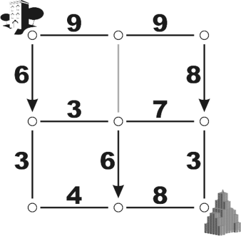

Home Page
F.A.Qs
Statistical Charts
Past Contests
Scheduled Contests
Award Contest
| Online Judge | Problem Set | Authors | Online Contests | User | ||||||
|---|---|---|---|---|---|---|---|---|---|---|
| Web Board Home Page F.A.Qs Statistical Charts | Current Contest Past Contests Scheduled Contests Award Contest | |||||||||
|
Language: Here We Go(relians) Again
Description The Gorelians are a warlike race that travel the universe conquering new worlds as a form of recreation. Given their violent, fun-loving nature, keeping their leaders alive is of serious concern. Part of the Gorelian security plan involves changing the traffic patterns of their cities on a daily basis, and routing all Gorelian Government Officials to the Government Building by the fastest possible route. Fortunately for the Gorelian Minister of Traffic (that would be you), all Gorelian cities are laid out as a rectangular grid of blocks, where each block is a square measuring 2520 rels per side (a rel is the Gorelian Official Unit of Distance). The speed limit between two adjacent intersections is always constant, and may range from 1 to 9 rels per blip (a blip, of course, being the Gorelian Official Unit of Time). Since Gorelians have outlawed decimal numbers as unholy (hey, if you're the dominant force in the known universe, you can outlaw whatever you want), speed limits are always integer values. This explains why Gorelian blocks are precisely 2520 rels in length: 2520 is the least common multiple of the integers 1 through 9. Thus, the time required to travel between two adjacent intersections is always an integer number of blips. In all Gorelian cities, Government Housing is always at the northwest corner of the city, while the Government Building is always at the southeast corner. Streets between intersections might be one-way or two-way, or possibly even closed for repair (all this tinkering with traffic patterns causes a lot of accidents). Your job, given the details of speed limits, street directions, and street closures for a Gorelian city, is to determine the fastest route from Government Housing to the Government Building. (It is possible, due to street directions and closures, that no route exists, in which case a Gorelian Official Temporary Holiday is declared, and the Gorelian Officials take the day off.)  The picture above shows a Gorelian City marked with speed limits, one way streets, and one closed street. It is assumed that streets are always traveled at the exact posted speed limit, and that turning a corner takes zero time. Under these conditions, you should be able to determine that the fastest route from Government Housing to the Government Building in this city is 1715 blips. And if the next day, the only change is that the closed road is opened to two way traffic at 9 rels per blip, the fastest route becomes 1295 blips. On the other hand, suppose the three one-way streets are switched from southbound to northbound (with the closed road remaining closed). In that case, no route would be possible and the day would be declared a holiday. Input The input consists of a set of cities for which you must find a fastest route if one exists. The first line of an input case contains two integers, which are the vertical and horizontal number of city blocks, respectively. The smallest city is a single block, or 1 by 1, and the largest city is 20 by 20 blocks. The remainder of the input specifies speed limits and traffic directions for streets between intersections, one row of street segments at a time. The first line of the input (after the dimensions line) contains the data for the northernmost east-west street segments. The next line contains the data for the northernmost row of north-south street segments. Then the next row of east-west streets, then north-south streets, and so on, until the southernmost row of east-west streets. Speed limits and directions of travel are specified in order from west to east, and each consists of an integer from 0 to 9 indicating speed limit, and a symbol indicating which direction traffic may flow. A zero speed limit means the road is closed. All digits and symbols are delimited by a single space. For east-west streets, the symbol will be an asterisk '*' which indicates travel is allowed in both directions, a less-than symbol '<' which indicates travel is allowed only in an east-to-west direction, or a greater-than symbol '>' which indicates travel is allowed only in a west-to-east direction. For north-south streets, an asterisk again indicates travel is allowed in either direction, a lowercase "vee" character 'v' indicates travel is allowed only in a north-to-south directions, and a caret symbol '^' indicates travel is allowed only in a south-to-north direction. A zero speed, indicating a closed road, is always followed by an asterisk. Input cities continue in this manner until a value of zero is specified for both the vertical and horizontal dimensions. Output For each input scenario, output a line specifying the integer number of blips of the shortest route, a space, and then the word "blips". For scenarios which have no route, output a line with the word "Holiday". Sample Input 2 2 9 * 9 * 6 v 0 * 8 v 3 * 7 * 3 * 6 v 3 * 4 * 8 * 2 2 9 * 9 * 6 v 9 * 8 v 3 * 7 * 3 * 6 v 3 * 4 * 8 * 2 2 9 * 9 * 6 ^ 0 * 8 ^ 3 * 7 * 3 * 6 ^ 3 * 4 * 8 * 0 0 Sample Output 1715 blips 1295 blips Holiday Source |
[Submit] [Go Back] [Status] [Discuss]
All Rights Reserved 2003-2013 Ying Fuchen,Xu Pengcheng,Xie Di
Any problem, Please Contact Administrator